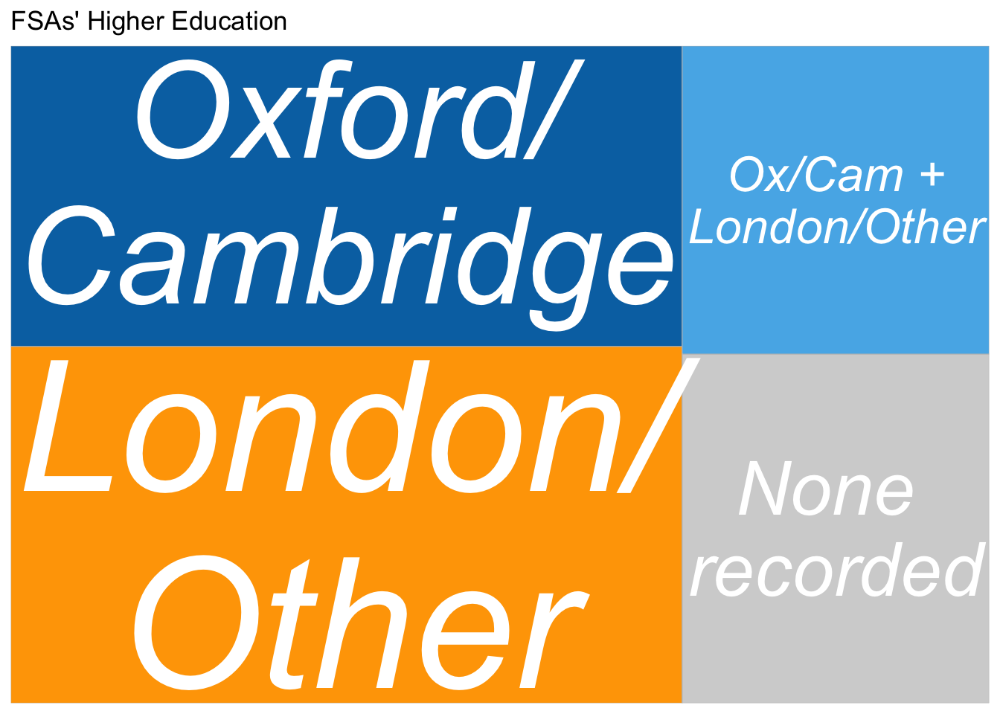

The higher education of FSAs (P94)
education
Colleges attended by BN Fellows of the Society of Antiquaries
Wikibase query
Education - which women FSAs went to Oxford or Cambridge colleges
Using the educated at property.
FSAs at Oxford/Cambridge and elsewhere
Highlighting that a significant proportion of FSAs have no college/university level education recorded at all and a number went to Oxford/Cambridge and to at least one other institution.